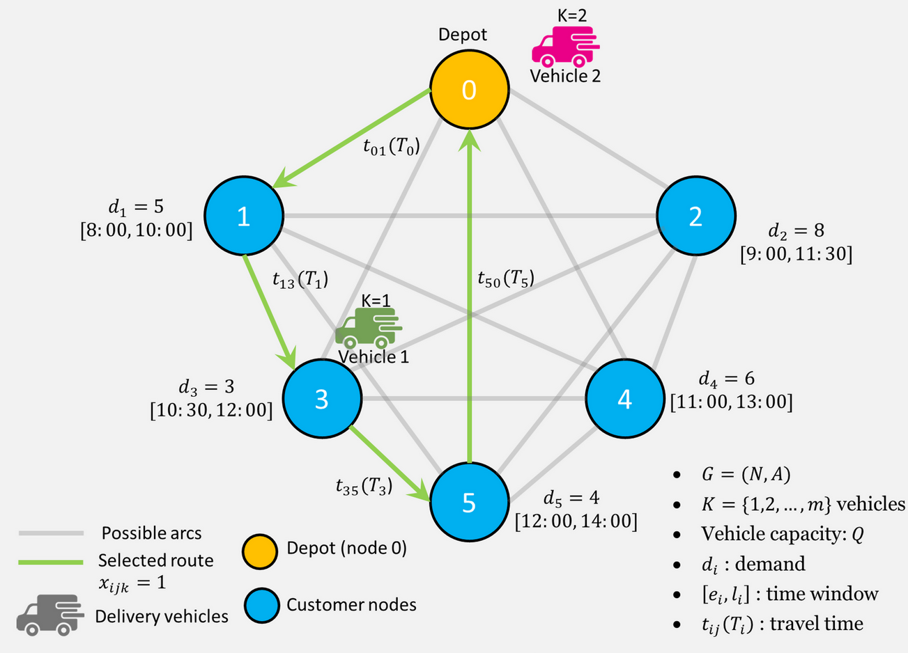

About Me
Results-driven Data Analyst specializing in operations optimization, logistics networks, supply chain analytics, and energy analytics.
I transform complex datasets into actionable insights using SQL, Python, Tableau, and Excel to drive efficiency, cost reduction, and informed decision-making.
Focused on delivering measurable business impact through predictive modeling, process improvement, and high-impact data visualizations.
Featured Projects
Data-Driven Last-Mile Logistics Optimization...

Developed a data-driven solution to optimize last-mile delivery for small businesses in emerging markets by clustering Points of Interest (POIs) into efficient delivery zones and calculating optimized routes.
Reduced potential delivery time and fuel costs through geospatial analysis.
• Clustered thousands of locations using K-Means algorithms
• Built road network routing with OSMnx and NetworkX
• Created interactive visualizations showing zones and routes
Tech stack: Python, GeoPandas, OSMnx, NetworkX, Scikit-learn, Matplotlib
Energy Consumption Forecasting Model
Python-based predictive model improving energy demand accuracy by 25% for better planning and resource allocation.